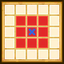

| Lv: | 140 |
|---|---|
| HP: | |
| MP: | |
| ATK: | |
| DEF: | |
| AGL: | |
| WIS: | |
| Move: | |
| Weight: | 55 |
| Weaknesses: |  |
 |
/ |  |
 |
|---|---|---|---|---|---|
| Resistances: |  |
 |
/ |  |
 |
| Immunities: |  |
| Abilities | ||||||
|---|---|---|---|---|---|---|
| Level | Type | Name | MP | Element | Range | Description |
| 1 |  |
スライダパンチ | 34 |  |
 1-3 |
Deals minor physical damage (70% potency) to 1 enemy 3 times |
| 1st A-Rank Ability Choice (Left) |
 |
スライダーガード | 32 | |
 1 AOE (incl. self) |
Reduces damage taken by 20% for all allies in area of effect for 3 turns |
| 1st A-Rank Ability Choice (Centre) |
|
スライダーエール | 32 | |
1 AOE (incl. self) |
Raises ATK of all allies in area of effect for 3 turns |
| 1st A-Rank Ability Choice (Right) |
|
スライダーヒール | 70 | |
1 AOE (incl. self) |
Heals a major amount of HP for all allies in area of effect |
| 2nd A-Rank Ability Choice (Left) |
 |
必殺スライダーキック | 75 | |
1-3 |
Deals huge physical damage (600% potency) to ??? units, and deals major physical damage (300% potency) to all other units, occasionally lowers DEF for 3 turns |
| 2nd A-Rank Ability Choice (Centre) |
 |
必殺スライダークロス | 70 |  |
 Front |
Deals major surehit Zap-type physical damage (300% potency) to all enemies in area of effect |
| 2nd A-Rank Ability Choice (Right) |
|
必殺スライダーラッシュ | 72 | |
 Front |
Deals minor physical damage (45% potency) to random enemies in area of effect 8 times, very rarely paralyses |
| Base Perks | ||
|---|---|---|
| Level | Name | Description |
| 1 | Max HP +30 | Raises max HP by 30 |
| 1 | Max MP +15 | Raises max MP by 15 |
| 1 | クールなヒーロー | When user's ability KO's enemy: Grants the user Stylish for 3 turns |
| 110, 120, 130, 140 | Physical Potency/Recovery +2% | Raises physical potency/recovery by 2% |
| Awakening Perks | ||
|---|---|---|
| Awakening | Name | Description |
| 1 | Move +1 | Raises Move by 1 |
| 2 | Crack Res +25 | Raises Crack resistance by 25 |
| 3 | Auto HP Regen | Action start: Heals 10% of max HP |
| 3, 5 | Physical Potency/Recovery +5% | Raises physical potency/recovery by 5% |
| 4 | Sizz Res +25 | Raises Sizz resistance by 25 |
| 5 | Auto MP Regen | Action start: Restores 8% of max HP |
| 1, 2, 3, 4, 5 | Stats Up | Raises HP, MP, ATK, DEF, WIS and AGL by 5% |
| Character Builder | ||
|---|---|---|
| Note: Only one ability/perk can be selected from each row | ||
| HP +5 | ||
| MP +5 | ||
| ATK +3 | ||
| DEF +3 | ||
| WIS +3 | ||
| AGL +3 | ||
| スライダーガード Reduces damage taken by 20% for all allies in area of effect for 3 turns |
スライダーエール Raises ATK of all allies in area of effect for 3 turns |
スライダーヒール Heals a major amount of HP for all allies in area of effect |
| HP +5 | ||
| MP +5 | ||
| ATK +3 | ||
| DEF +3 | ||
| WIS +3 | ||
| AGL +3 | ||
| 連撃ヒーロー Lowers physical ability MP cost by 10%, raises potency and recovery by 10% When making a physical attack: Rarely activates a physical ability or Fight 2 times in succession This perk can be triggered by non-damage dealing abilities |
勇敢ヒーロー Action start on even turns until turn 6: Raises ATK, DEF, and AGL for 3 turns |
軽快ヒーロー Battle start: Greatly raises ATK and evasion rate for 3 turns |
| HP +5 | ||
| MP +5 | ||
| ATK +3 | ||
| DEF +3 | ||
| WIS +3 | ||
| AGL +3 | ||
| 必殺スライダーキック Deals huge physical damage (600% potency) to ??? units, and deals major physical damage (300% potency) to all other units, occasionally lowers DEF for 3 turns |
必殺スライダークロス Deals major surehit Zap-type physical damage (300% potency) to all enemies in area of effect |
必殺スライダーラッシュ Deals minor physical damage (45% potency) to random enemies in area of effect 8 times, very rarely paralyses |
| HP +5 | ||
| MP +5 | ||
| ATK +3 | ||
| DEF +3 | ||
| WIS +3 | ||
| AGL +3 | ||
| 不沈のヒーロー Battle start: Reduces damage taken by 50% 1 time only for 99 turns |
不屈のヒーロー Before HP hits 0: Occasionally preserves HP at 1 This perk can be triggered by poison, special effect spaces, ally attacks, and reflected attacks, as well as counterattacks, follow-ups, and other attacks or effects triggered by perks |
不動のヒーロー When afflicted with a status ailment: Removes some status ailments, 1 time per battle This perk can be triggered by non-damage dealing abilities or attacks by allies |
| HP +5 | ||
| MP +5 | ||
| ATK +3 | ||
| DEF +3 | ||
| WIS +3 | ||
| AGL +3 | ||
| ATK +50 Raises max ATK by 50 |
HP +100 Raises max HP by 100 |
AGL +50 Raises max AGL by 50 |
| HP +5 | ||
| MP +5 | ||
| ATK +3 | ||
| DEF +3 | ||
| WIS +3 | ||
| AGL +3 | ||
| Physical MP Cost -5% Lowers physical MP cost by 5% |
All Damage Down 3% Reduces all damage taken by 3% |
Critical Hit Rate +1% Raises critical hit rate by 1% |
(HP, MP, ATK, DEF, WIS, & AGL +1) x5 |
||